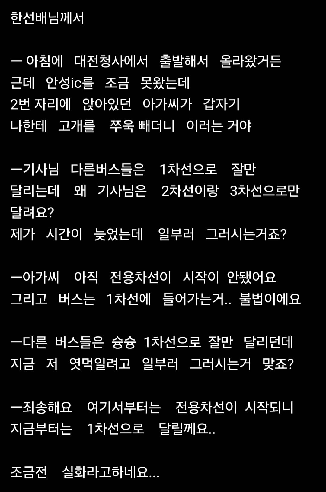

그놈의 다른 사람은 해줬다충

그놈의 다른 사람은 해줬다충
처늦지를 마세요 이년아
너가누군데..
나를 모르느냐
부산이였으면 서로 소리치다가 가는데 저걸 상대해줘? 존나 착하다
확 시발 수틀리면 핸들 틀기전에 아기리 다물고 앉아있어라고 해야되는데 ㅅㅂ
"저한테 범법을 강요하시는 건가요?"
프레임을 잘 잡아야 함
대부분의 사람들은 자기가 무턱대고 꺼낸 말이 좃도 말도 안 되는 걸 깨닫는 시점에도 태도를 바꾸지 않기 때문에
지가 늦게 나와놓고 딴사람한테 지랄이야
요즘처럼 무서운 세상에 뭔깡으로 저지랄하는지 모르겠네.. 버스기사가 만만하니까 그러겠지? 부디 임자만나서 몸에 구멍 몇개 나보길 바란다... 죽진말고
오케이 안가 ㅅㄱ
ㅋㅋㅋ 지가 누군줄알고 일부러 저지랄을 해
그렇게 대단한 인간이면 개인기사 리무진 타고가야지
자기 골탕먹이려고 저런다는 말 자체가 세상을 얼마나 자기중심적으로 보고 있는 건지 감도 안옴
아질어질하다